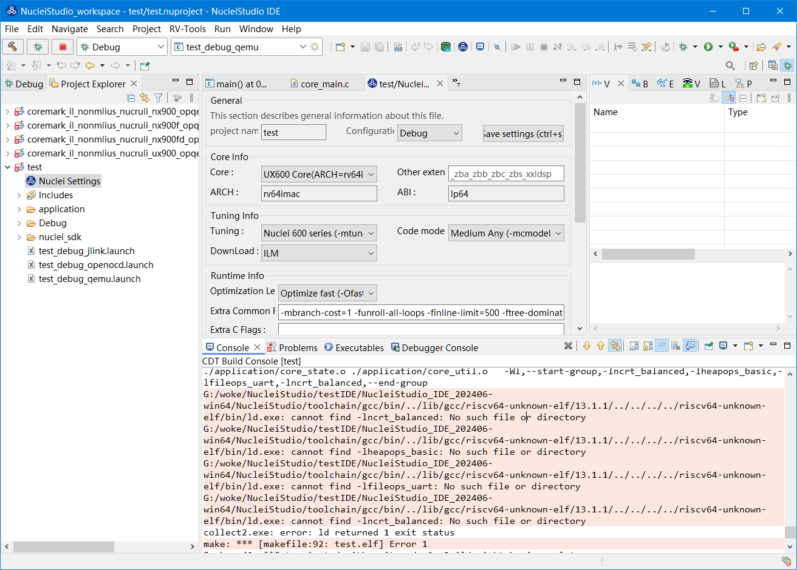
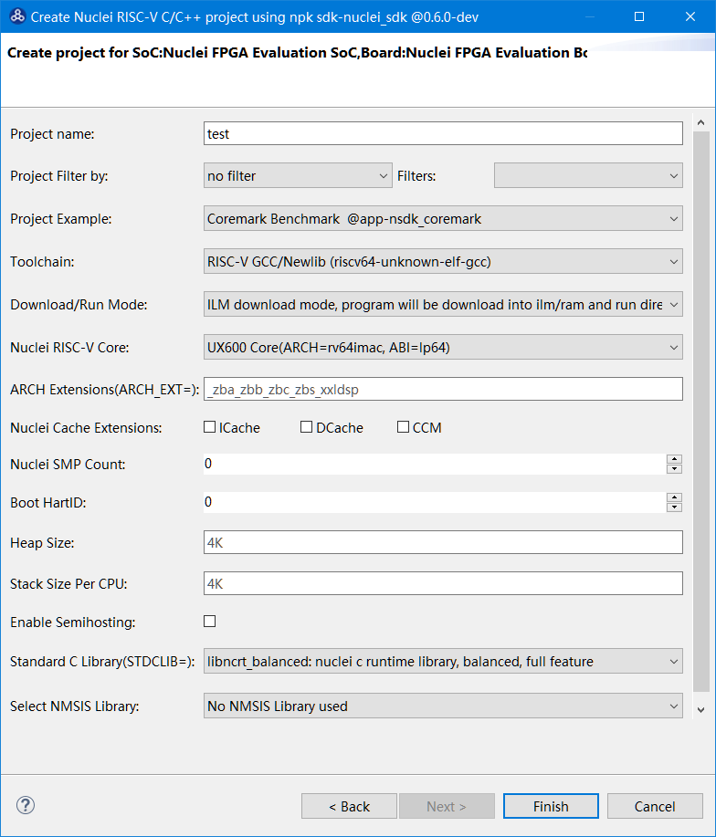

cannot find -lncrt_balanced: No such file or directory¶
问题说明¶
在NucleiStudio中使用编译工程时有报错信息如下：
G:/NucleiStudio/toolchain/gcc/bin/../lib/gcc/riscv64-unknown-elf/13.1.1/../../../../riscv64-unknown-elf/bin/ld.exe: cannot find -lncrt_balanced: No such file or directory
G:/NucleiStudio/toolchain/gcc/bin/../lib/gcc/riscv64-unknown-elf/13.1.1/../../../../riscv64-unknown-elf/bin/ld.exe: cannot find -lheapops_basic: No such file or directory
G:/NucleiStudio/toolchain/gcc/bin/../lib/gcc/riscv64-unknown-elf/13.1.1/../../../../riscv64-unknown-elf/bin/ld.exe: cannot find -lfileops_uart: No such file or directory
G:/NucleiStudio/toolchain/gcc/bin/../lib/gcc/riscv64-unknown-elf/13.1.1/../../../../riscv64-unknown-elf/bin/ld.exe: cannot find -lncrt_balanced: No such file or directory

是因为在创建工程时，我们创建了一个64位的工程，同时在Standard C Library时，选择了带-lncrt_balanced、-lfileops_uart的扩展，而此类扩展又不支持64位，导致编译不通过。

解决方案¶
-lncrt_balanced、-lfileops_uart不支持64位处理器，在创建此类处理器工程时，避免使用此类扩展。